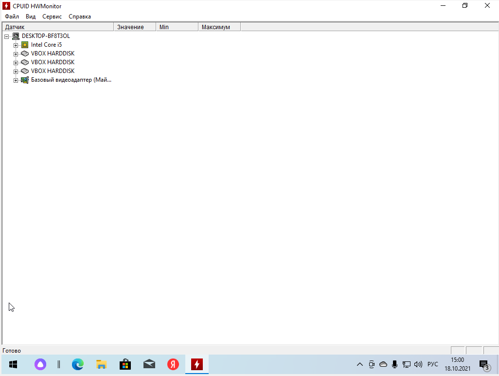
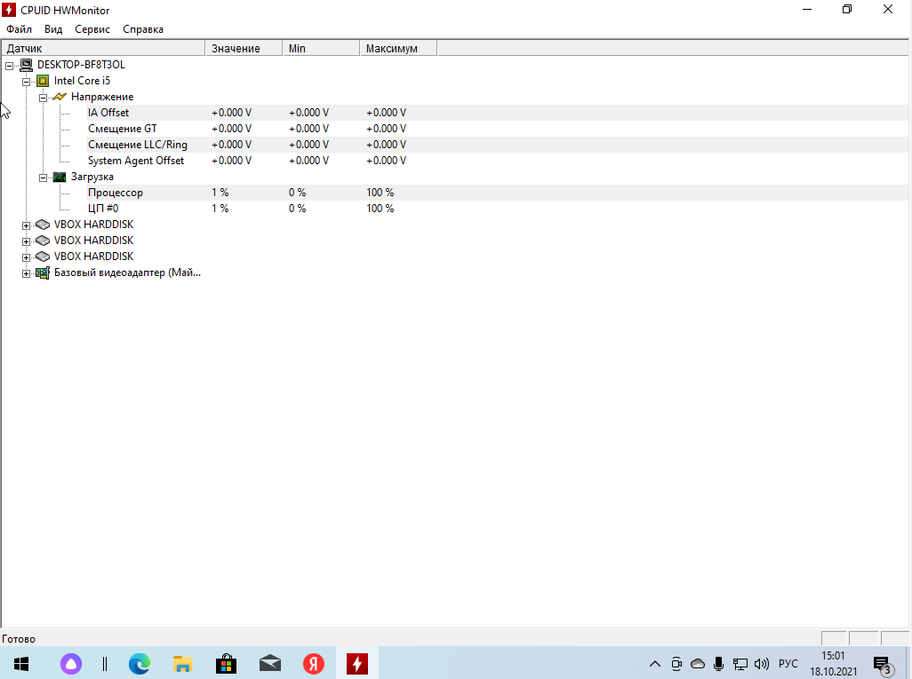
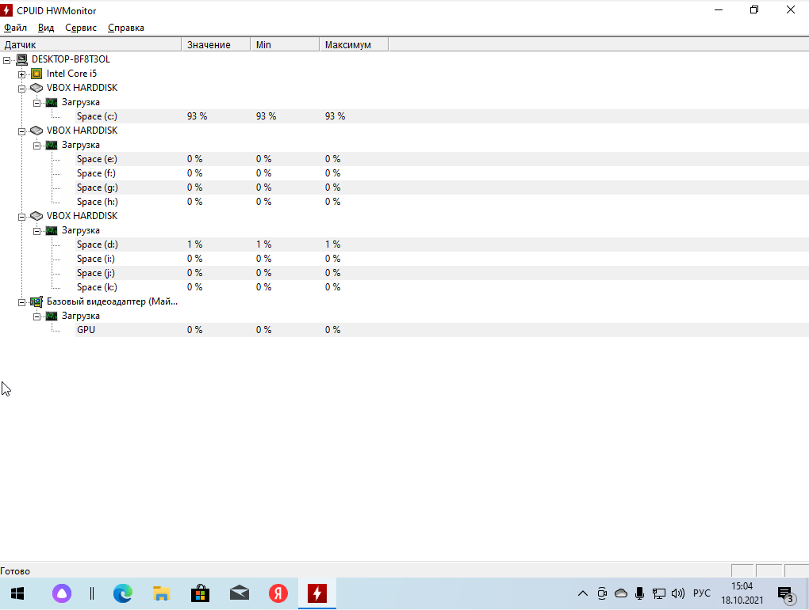
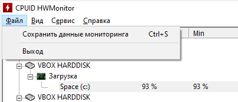

Утилита мониторинга HWMonitor – разработка иностранных программистов, объединенных в компанию CPUID, которая содержит в себе все самое необходимое, чтобы получить максимальное количество данных о состоянии системы.
Основные возможности:
- Анализ параметров жесткого диска
- Загруженность жесткого диска
- Анализ параметров видеокарты
- Отслеживание напряжения
- Анализ работы процессора
- Анализ работы видеокарты
- Анализ работы аккумулятора
- Сохранение результатов для сравнения
Главное меню CPUID HWMonitor содержит основные разделы системы

Анализ работы процессора (Частота процессора, напряжение, загруженность процессора)

Анализ параметров жесткого диска

Возможность cохранения результатов мониторинга системы
